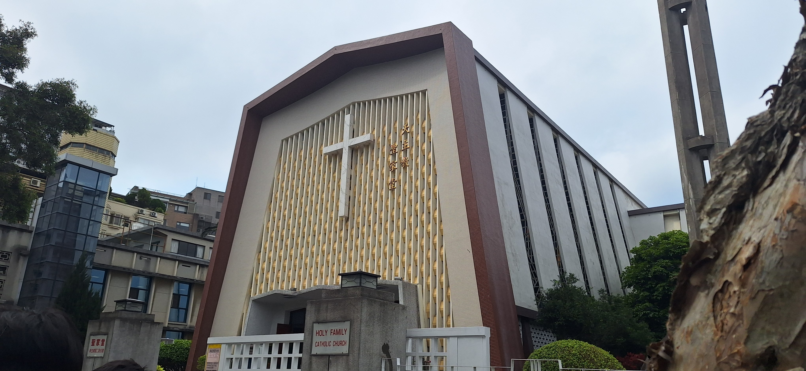
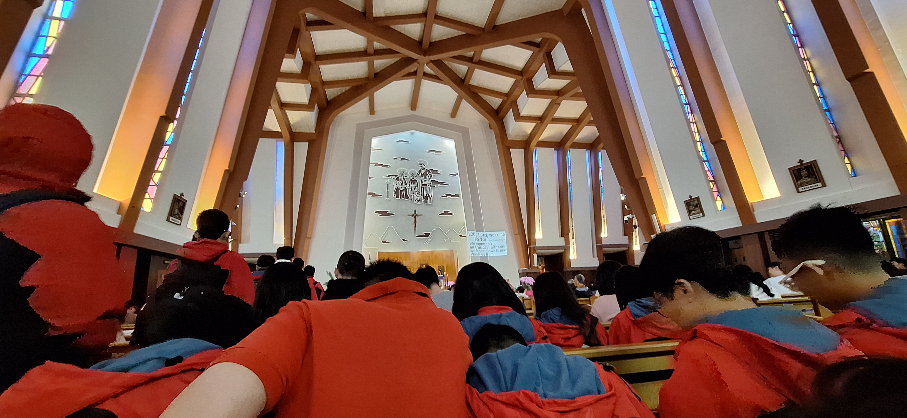
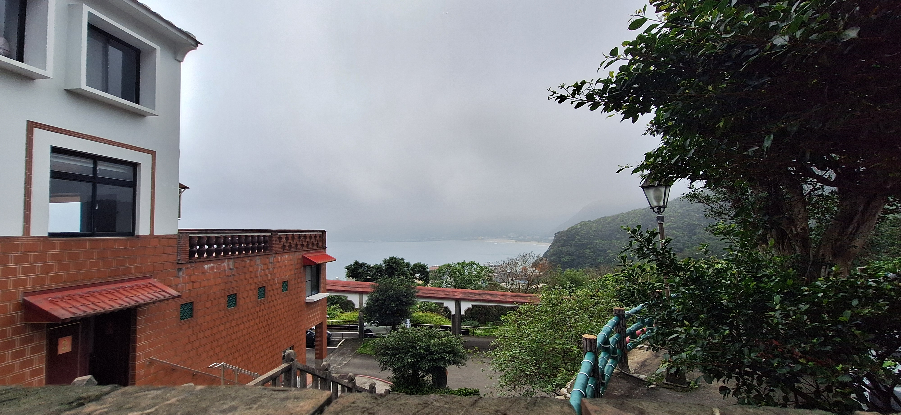
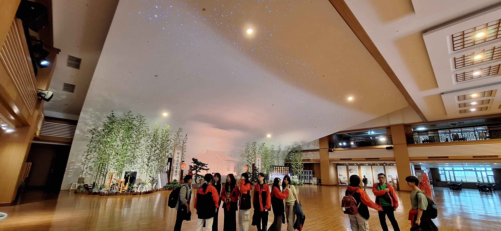

Ini adalah halaman Agama
|
Di Agama, saya belajar tentang Gereja Holy Family Catholic Church
|
|   |
Gereja dibangun pada tahun 1964, Gereja ini merupakan salah satu Gereja Terbesar di Taiwan. Altar Gereja merupakan altar yang sangat simplistik. kaca kaca yang terdapat di Gereja juga mengilustrasi perjalanan Yesus ke gunung Golgota. Di belakang Altar ada bendera negara Taiwan, serta Salib Yesus. Di depan kiri Gereja Patung Bunda Maria yang terbentuk dari bahan berkayu Di depan kanan Gereja terdapat Piano. Gereja ini merupakan Gereja biasa yang digunakan untuk ibadah mingguan.
|
Di Agama, saya Juga belajar tentang Comunity Service di Tzu Chi foundation center dan di Ren Ai citizens home
|
|   |
Saya melakukan Comunity Service di Tzu Chi foundation center dan di Ren Ai citizens home. Di Tzu Chi foundation center, saya melakukan kegiatan Belajar tentang daur ulang dan saya hanya menonton performance theman saya di ren ai citizens home. Tujuan saya adalah untuk belajar tentang daur ulang dan menghibur orang lansia. Saya belajar banyak hal di Tzu chi, salah satunya adalah tujuan sampah ketika tidak di daur ulang dan saya tidak belajar apapun di Ren ai citizens home. Cara saya membuktikan aku anak Allah di Tzu Chi foundation center adalah dengan melakukan kegiatan belajar dan mengorbankan waktu agar daur ulang lebih dilakukan dan di Ren Ai citizens home adalah menonton dan mengikuti kegiatan yang ada.